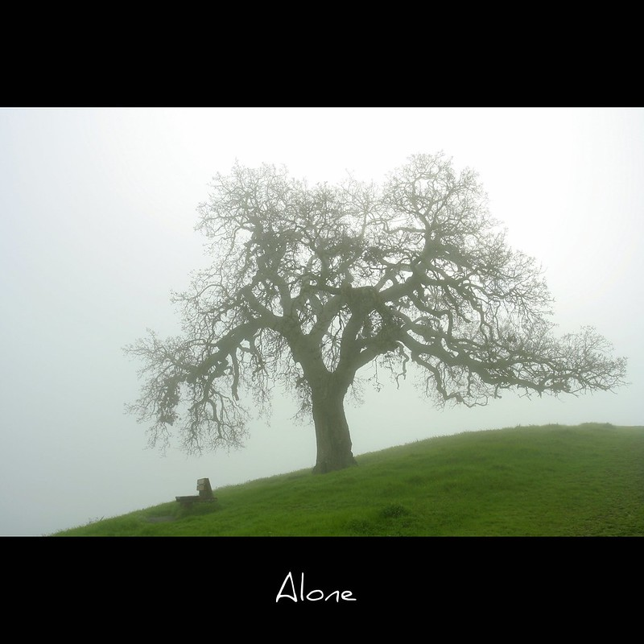

Gia Vey comes from an imaginary world called Aeralis. Aeralis is a floating landscape made of broken platforms, fog, and open sky. The land is always shifting, so nothing ever feels completely stable.
This unstable environment forces its inhabitants to stay alert and adaptable. The cool air, open space, and constantly changing terrain help shape Gia’s calm, observant, and controlled nature.
This page presents the Photo Editing Assignment and introduces the mysterious world where Gia originates.
